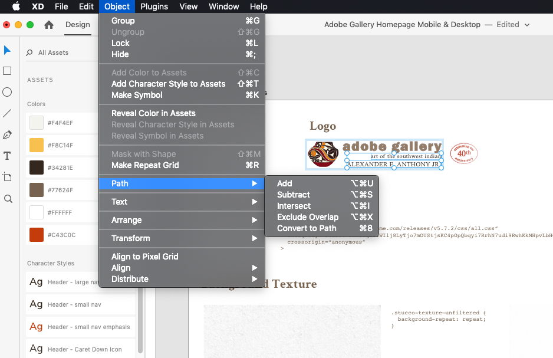
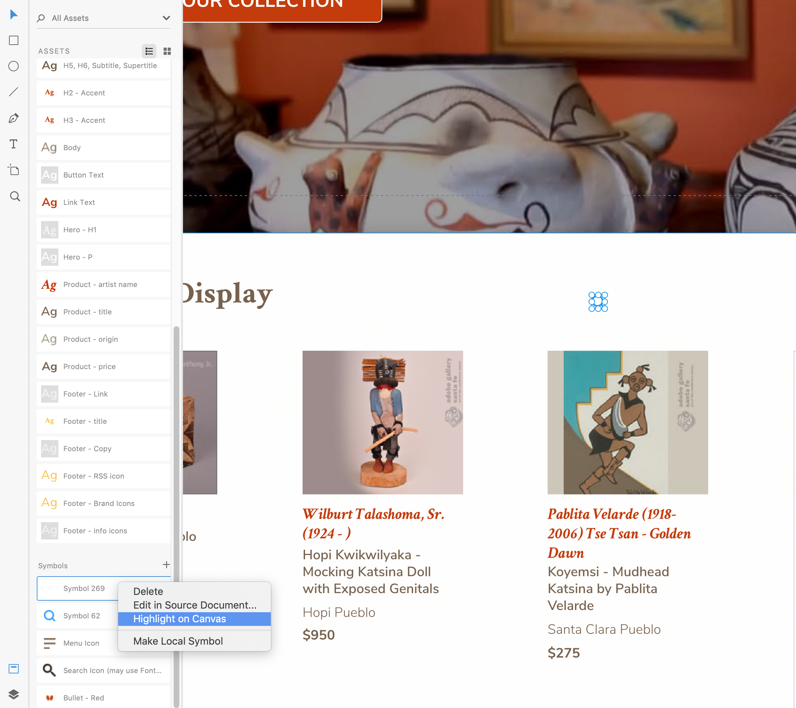
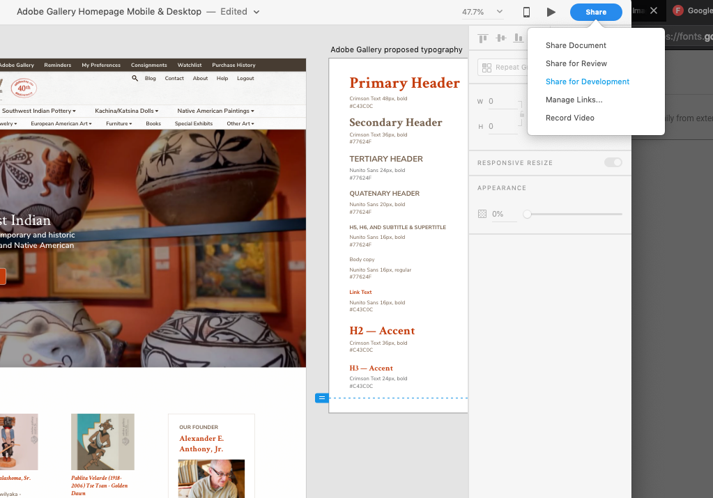

Exporting Designs
XD File Handoff Checklist
Save as a copy
Keep your working file separate. Give this one a name that will be useful and descriptive. Perhaps use a standard file naming convention like so:
CLIENT_PROJECT_filename.version.xd
Outline fonts where appropriate
Not all font should be outlines, that makes it much harder to copy and paste. However, font in things like logo lockups should probably not be editable, and the developer would prefer to have an image rather than a bunch of HTML to embed as the logo.
Select the text, then: Object > Path > Make Path
Note: XD keeps this as a vector, so the developer can (and probably should) export this as an SVG
Embed Any Linked Symbols
Maybe you draged a few pieces in from a UI kit? Maybe you dragged some stuff over from a previous version of the design? Best be sure that it's all going over together.
Assets (⇧⌘Y) > right click on linked symbols > make local
Create Character Styles
Best check that your typography is consistent. In the assets panel, give the character styles names corresponding to their role in the page. At the least, define the following:
- h1 - h6
- body copy
- link text
- button text
- any special formatting used in the mockup (product title, pricing, hero text)
Mark Resources for Export
In the layers panel, group anything together that should be a group (right click > group) and then mark for export (right click > mark for export).
MAKE SURE THINGS HAVE MEANINGFUL NAMES! This includes groups. It can be helpful to sort the layers panel to just show one layer type. Images, for example.
Things you might want to export:
- Images
- Symbols
- Logo
- background-textures
- background-images
Create Font Bundle
Sure, you've got a sweet colleciton of fonts on your computer, but your developer probably would probably prefer not to have to track down "IFC Insane Rodeo" on Font Squirrel or wherever.
You'll want to zip up all the fonts into a nice bundle. Keep in mind awkward font licenses may complicate your life here, which is why you should probably be using webfonts from Google or Typekit to keep that simple.
In Google Fonts, select all fonts used and then download zip file.
Using other fonts? You’ll need to grab those separately. Here are a couple of useful links:
Share the Files
Consider using a shared Drive folder or a Slack channel dedicated to the project or client you're working with. Make sure that everybody who needs them has permissions to access the files you're uploading. Then share your XD file and your font bundle.
Share Developer Preview in XD
XD has this cool new feature where it will generate an interactive spec sheet for your developers. The developer can grab copy, see font sizes, weights, line-heights, and the like. They can grab hex codes and see the exact dimensions of elements in your mockup. Plus, you can both comment in the preview, and pin comments to the designs. (Tip: Adobe CC has an extension for Slack that will alert you if you get a comment on a file you are tracking.)

In XD, click the share button in the top-right corner. Then select "share for development." It will take its sweet time, but it'll make you a link which you can share with the developer. Once it's done this, open the link and poke around, you'll probably find a few assets that aren't properly linked.
Here are a few things to check:
- Can you find all the images that the developer will need to export?
- Can you find all the symbols the developer will need to export? This includes things like SVG icons (from the Noun Project, for example).
- What about the logo?
Now update anything that was missing, and update the developer preview back in XD. It'll take its sweet time (again), but it will update the preview. You won't need a new link or anything.
Wrapping Up
Now let your developer know where they can find the source files and the developer preview.
Sketch File Handoff Checklist
Looks like there's nothing here yet. To contribute, submit a pull request over at https://bitbucket.org/pwrightxyn/design-export-guide/src/master/.
Print Design Handoff Checklist
This whole document is loosely inspired by Aaron James Daplin's fantastic File Hand-Off Checklist for print design. Why not use the original?
Got a suggestion?
This is intended to be a living document. You see the source code for this page at https://bitbucket.org/pwrightxyn/design-export-guide/src/master/. Feel free to submit a pull request if you have any changes you'd like to submit.